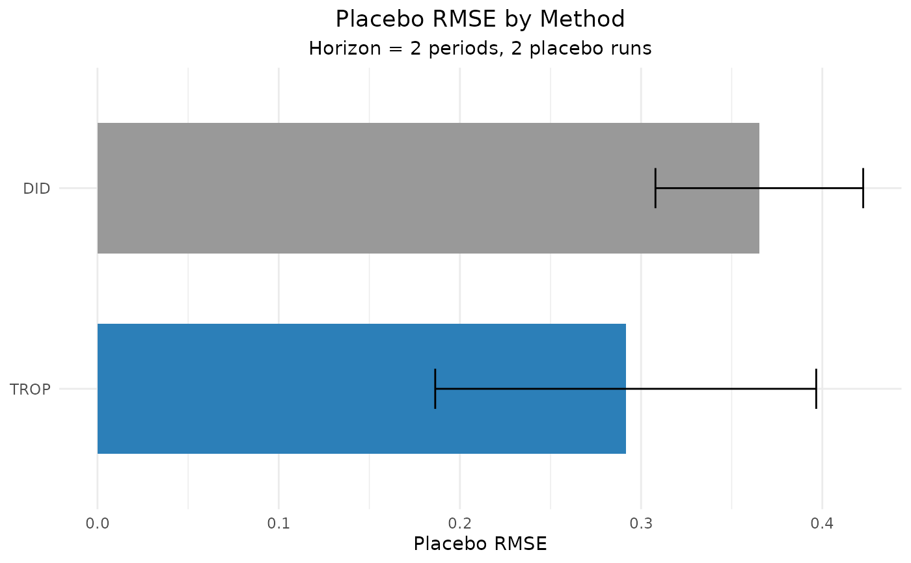

Compares estimators by how well each does on held-out control data, following the "random blocks" placebo idea of the doubly/triply robust panel estimator paper. Two scoring rules are available:
Usage
panel_rmse(
data,
outcome,
treatment,
unit,
time,
methods = c("DID", "SC", "SDID", "MC", "TROP", "DIFP"),
exclude = NULL,
metric = c("placebo", "prediction"),
horizon = 10L,
n_pseudo = 10L,
n_runs = 10L,
control = trop_control(),
seed = NULL,
verbose = FALSE
)Arguments
- data
A long
data.frame, one row per unit-time.- outcome, treatment, unit, time
Column names (strings).
- methods
Methods to compare; subset of
"DID","MC","TROP","DIFP","SDID","SC","gsynth","augsynth","CS". Defaults toc("DID", "SC", "SDID", "MC", "TROP", "DIFP").- exclude
Optional character vector of methods to drop from
methods(e.g.exclude = "DIFP"). Unknown names are ignored with a warning.- metric
"placebo"(placebo-ATT RMSE, all methods) or"prediction"(per-cell held-out counterfactual RMSE for"DID"/"MC"/"TROP"/"DIFP", and"SDID"/"SC"when synthdid is installed;"gsynth","augsynth"and"CS"areNAfor this metric).- horizon
Number of final periods held out per placebo cohort.
- n_pseudo
Number of placebo (pseudo-treated) control units per run.
- n_runs
Number of placebo runs to average over.
- control
A list of solver/CV controls from
trop_control().- seed
Optional integer seed for reproducible placebo draws.
- verbose
Logical; print progress.
Value
A cf_rmse_tbl (a data.frame) with one row per method and columns
method, rmse, rmse_se, n_runs, engine, note.
Details
metric = "placebo"(default): in each run a random set of control units is given a placebo block treatment in the finalhorizonperiods (true effect zero), every method is estimated on that control-only panel, and the score issqrt(mean(ATT^2))across runs. This works for every method – native (DID, MC, TROP) and wrapped (SDID/SCvia synthdid,gsynth,augsynth,CS= Callaway & Sant'Anna via did).metric = "prediction": per-cell one-step-ahead held-out RMSE (the paper's Table-1 unit-period counterfactual prediction error). A block of control cells is held out and each method predicts the untreated outcome there via its counterfactual matrix (counterfactual_matrix()). Supported for the native methods (DID,MC,TROP), forDIFP, and – when synthdid is installed – forSDIDandSC. The remaining wrapped methods (gsynth,augsynth,CS) are reported asNAfor this metric; usemetric = "placebo"for them.
Lower is better. Native methods are tuned once on the real data (DID is
parameter-free; MC selects lambda_nn; TROP selects the full triplet by
cross-validation) and reused across runs. Wrapped methods are skipped with a
note when their package is missing or the design does not apply.
References
Athey, S., Imbens, G. W., Qu, Z., & Viviano, D. (2025/2026). Triply/Doubly Robust Panel Estimators.
Examples
# \donttest{
df <- sim_panel(N = 14, T = 9, n_treated = 3, t0 = 6, att = 2, seed = 1)
r <- panel_rmse(df, "y", "w", "id", "t",
methods = c("DID", "TROP"),
horizon = 2, n_pseudo = 3, n_runs = 2,
control = trop_control(n_cv_cells = 5L, cv_cycles = 1L,
tol = 1e-3, seed = 1L),
seed = 1)
r
#> Out-of-sample RMSE by method (horizon = 2, n_pseudo = 3)
#> method rmse rmse_se n_runs engine note
#> TROP 0.2915 0.1051 2 cfcompare <NA>
#> DID 0.3652 0.0573 2 cfcompare <NA>
autoplot(r)

# }